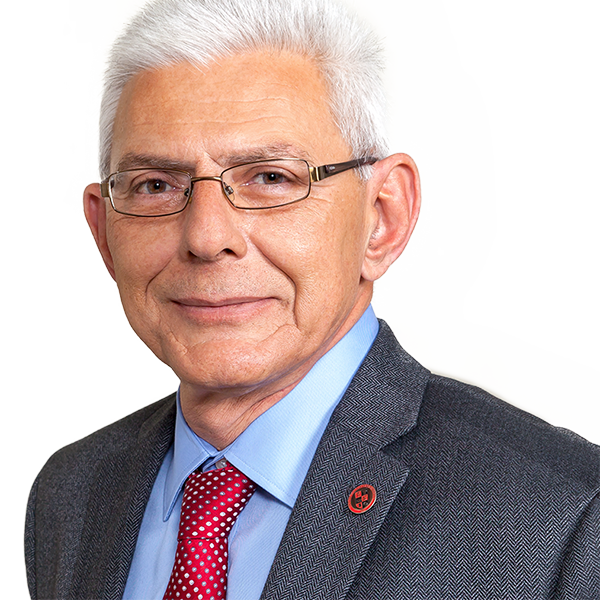
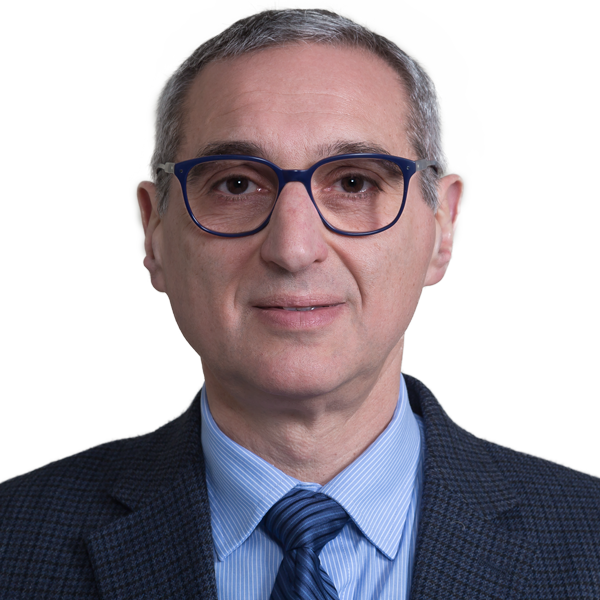
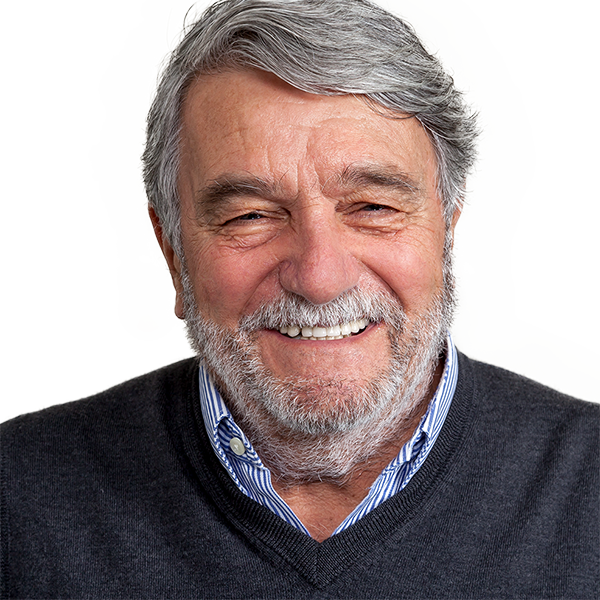
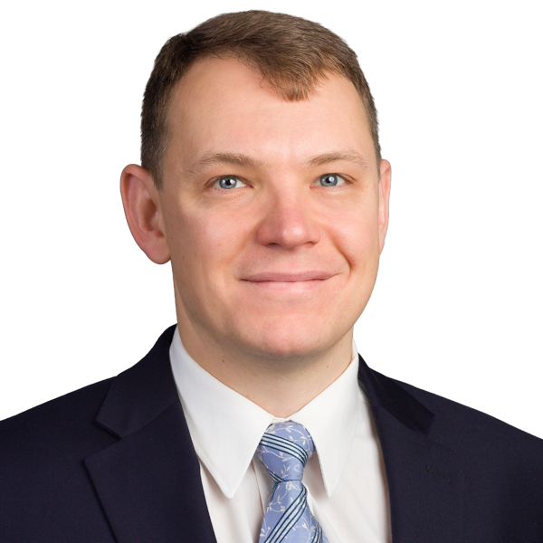
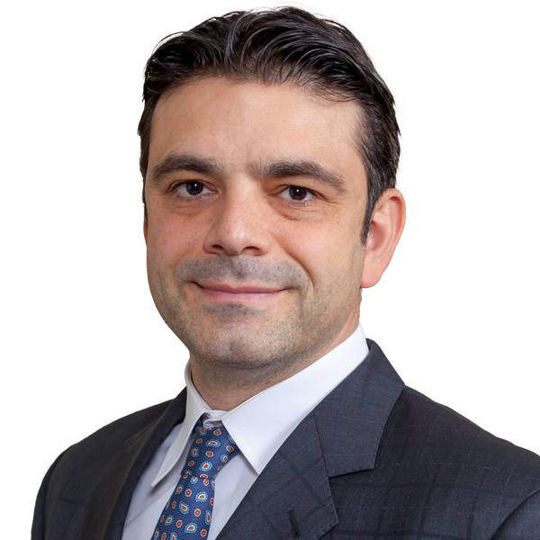
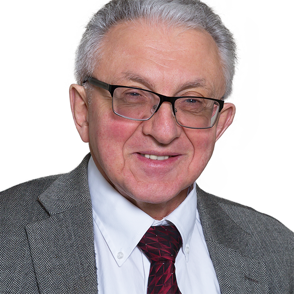
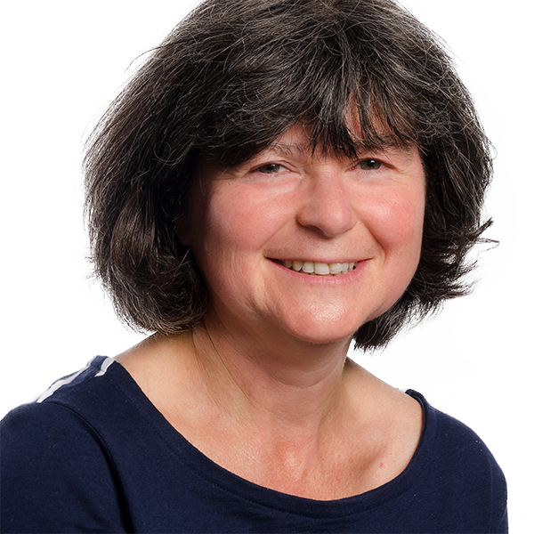
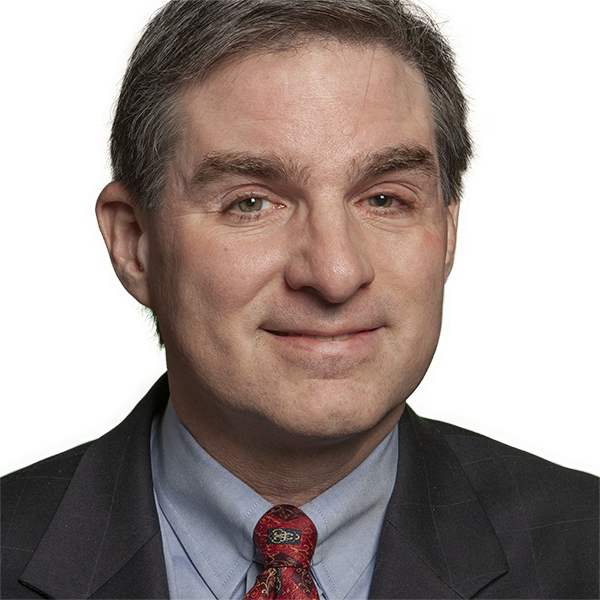
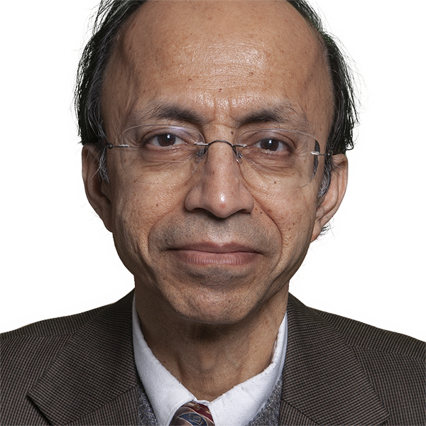
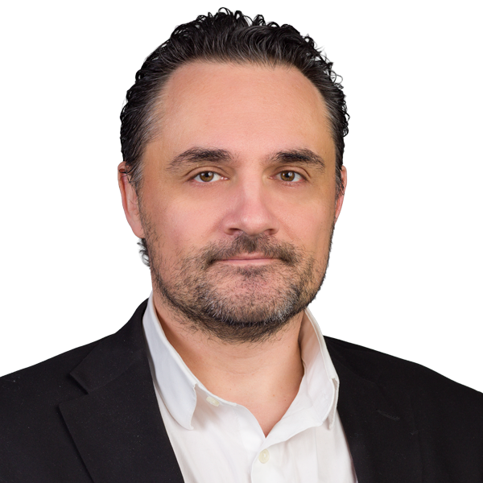

Directory
Chemical & Materials Engineering
Piero ArmenanteDistinguished ProfessorFluid MixingPharmaceutical Processing of Fluids and Dispersed-Phase SystemsDissolution TestingReaction engineeringLisa AxeProfessorchemical and physical processes in environmental systems Sagnik BasurayAssociate ProfessorBiosensorElectrochemicalMicro-NanofluidicsElectro-kineticsRich CiminoSenior University LecturerRajesh DaveDistinguished Professormodeling and development of novel techniques for dry particle coatingfilm-coated particlesgranules and engineered particulatesnano-particle mixing
Sagnik BasurayAssociate ProfessorBiosensorElectrochemicalMicro-NanofluidicsElectro-kineticsRich CiminoSenior University LecturerRajesh DaveDistinguished Professormodeling and development of novel techniques for dry particle coatingfilm-coated particlesgranules and engineered particulatesnano-particle mixing

Basil BaltzisProfessorSagnik BasurayAssociate ProfessorBiosensorElectrochemicalMicro-NanofluidicsElectro-kineticsRich CiminoSenior University LecturerRajesh DaveDistinguished Professormodeling and development of novel techniques for dry particle coatingfilm-coated particlesgranules and engineered particulatesnano-particle mixing
Edward DreyzinDistinguished ProfessorReactive materials and metal combustionmechanical alloyingmechanochemistryMetals combustionBehnam GhaleiAssistant ProfessorSeparation processesReactive and responsive membranesNanomaterials and polymers for molecular separationBiomimetic Membranes
Costas GogosDistinguished Research Professor
Gennady GorAssociate Professorporous materialsAdsorptionmolecular modelingthermodynamics
Murat GuvendirenAssociate ProfessorSynthesisbiodegradable polymersHydrogelsBiomaterialsKerri Lee ChintersinghAssistant ProfessorEnergetic MaterialsCatalystsSurface Reactions and PhenomenaExtreme Environments
Boris KhusidProfessorfluid mechanicselectric fieldsuspensionsKathleen McEnnisAssociate ProfessorPolymersmaterialsBiomaterialsdrug delivery
Irina MolodetskySenior University LecturerMaterials science and engineeringphysical chemistry and non-conventional technologies for materials and process engineeringNellone ReidSenior University LecturerMirko SchoenitzAssociate Research Professor
Donald SebastianProfessorReaction engineeringPolymer ProcessingdesignModeling & SimulationLaurent SimonProfessorModeling and Analysis of Transdermal Drug-Delivery SystemsNumerical and Experimental Approaches to Protein Separation and PurificationModeling and Control of Distributed Parameter Systems
Kamalesh SirkarDistinguished ProfessorNovel membranesmembrane separation processesnovel membrane processesMembranes and Membrane Separation TechnologiesNutth TuchindaAssistant ProfessorMetallurgyMaterials science and engineeringDavid VenerusProfessorTransport Phenomena in Soft MatterRheology of Complex FluidsInterfacial Transport PhenomenaForced Rayleigh Scattering
Roman VoronovAssociate Professor3D PrintingBioengineeringBiomanufacturingBloodXianqin WangProfessorXiaoyang XuProfessorbioimagingdrug deliveryregenerative medicineBiomaterialsMark ZhaoAssistant Professordichalcogenides (TMDs)oxides (TMOs)hexagonal boron nitride (hBN)grapheneProfessors
Piero ArmenanteDistinguished ProfessorFluid MixingPharmaceutical Processing of Fluids and Dispersed-Phase SystemsDissolution TestingReaction engineeringRajesh DaveDistinguished Professormodeling and development of novel techniques for dry particle coatingfilm-coated particlesgranules and engineered particulatesnano-particle mixingEdward DreyzinDistinguished ProfessorReactive materials and metal combustionmechanical alloyingmechanochemistryMetals combustionCostas GogosDistinguished Research ProfessorKamalesh SirkarDistinguished ProfessorNovel membranesmembrane separation processesnovel membrane processesMembranes and Membrane Separation TechnologiesBasil BaltzisProfessorBoris KhusidProfessorfluid mechanicselectric fieldsuspensionsDonald SebastianProfessorReaction engineeringPolymer ProcessingdesignModeling & SimulationLaurent SimonProfessorModeling and Analysis of Transdermal Drug-Delivery SystemsNumerical and Experimental Approaches to Protein Separation and PurificationModeling and Control of Distributed Parameter SystemsDavid VenerusProfessorTransport Phenomena in Soft MatterRheology of Complex FluidsInterfacial Transport PhenomenaForced Rayleigh ScatteringXianqin WangProfessorXiaoyang XuProfessorbioimagingdrug deliveryregenerative medicineBiomaterialsAssociate Professors
Sagnik BasurayAssociate ProfessorBiosensorElectrochemicalMicro-NanofluidicsElectro-kineticsGennady GorAssociate Professorporous materialsAdsorptionmolecular modelingthermodynamicsMurat GuvendirenAssociate ProfessorSynthesisbiodegradable polymersHydrogelsBiomaterialsKathleen McEnnisAssociate ProfessorPolymersmaterialsBiomaterialsdrug deliveryMirko SchoenitzAssociate Research ProfessorRoman VoronovAssociate Professor3D PrintingBioengineeringBiomanufacturingBloodAssistant Professors
Behnam GhaleiAssistant ProfessorSeparation processesReactive and responsive membranesNanomaterials and polymers for molecular separationBiomimetic MembranesKerri Lee ChintersinghAssistant ProfessorEnergetic MaterialsCatalystsSurface Reactions and PhenomenaExtreme EnvironmentsNutth TuchindaAssistant ProfessorMetallurgyMaterials science and engineeringMark ZhaoAssistant Professordichalcogenides (TMDs)oxides (TMOs)hexagonal boron nitride (hBN)grapheneNo faculty match “”.